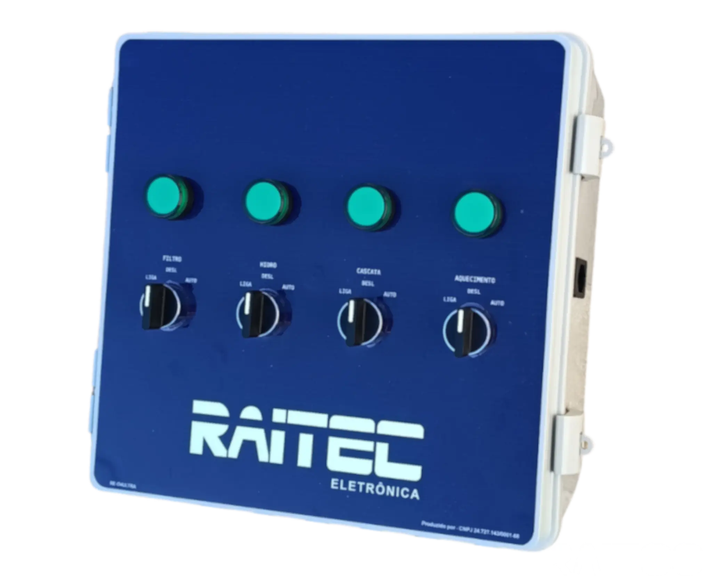
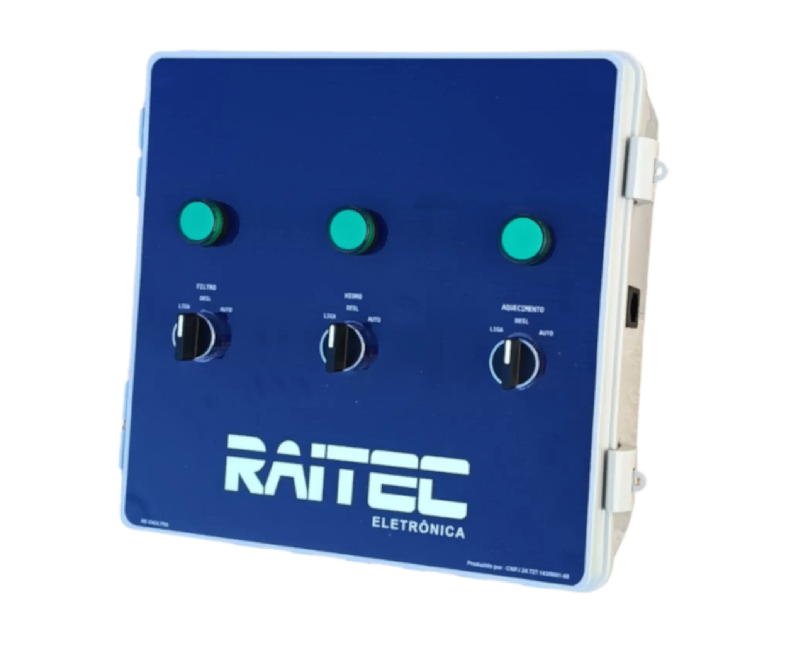
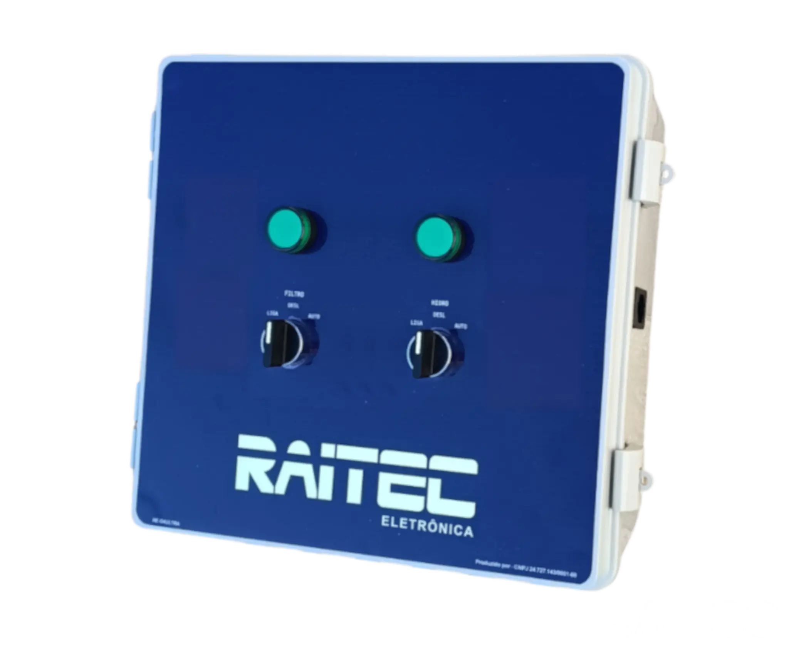
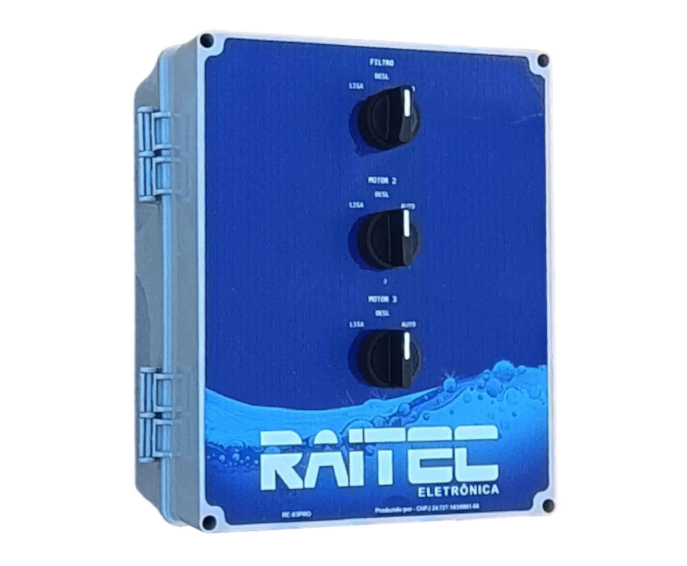
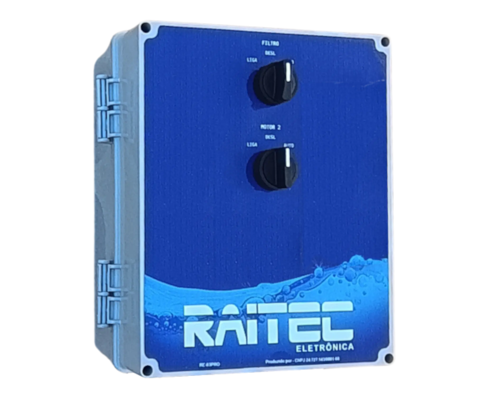
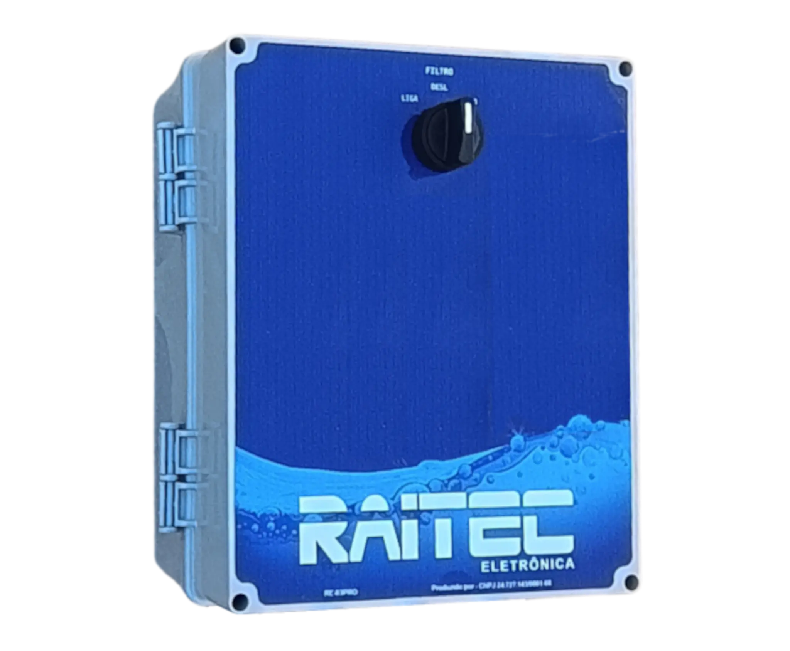
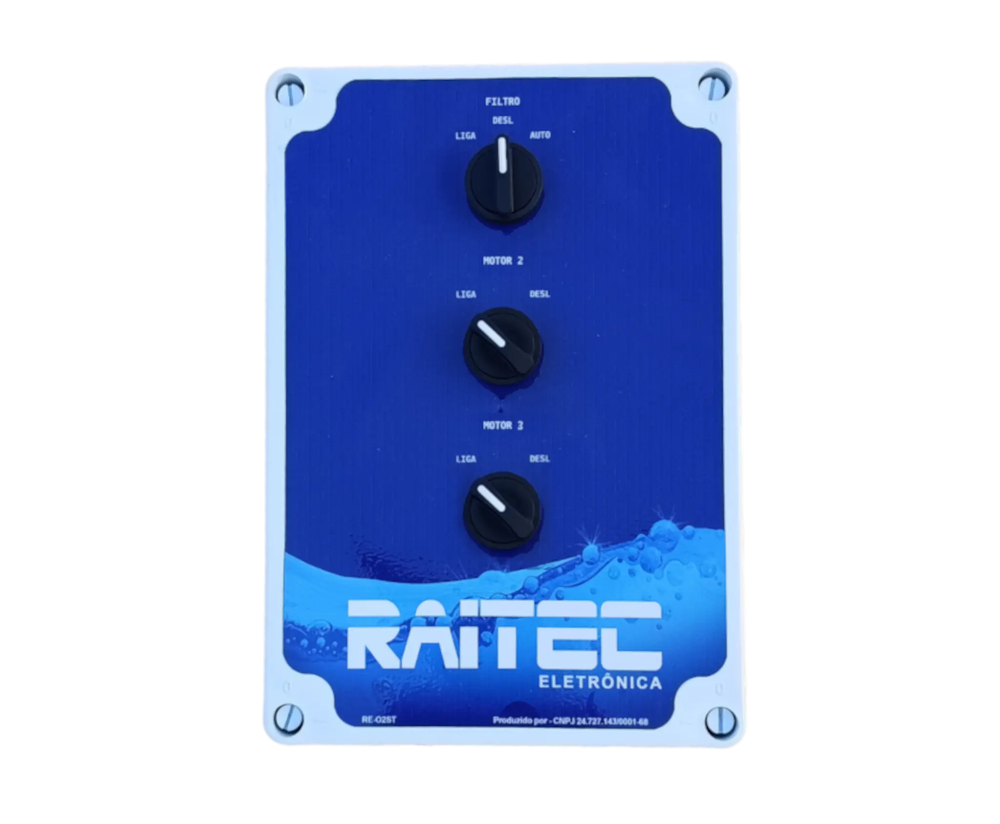
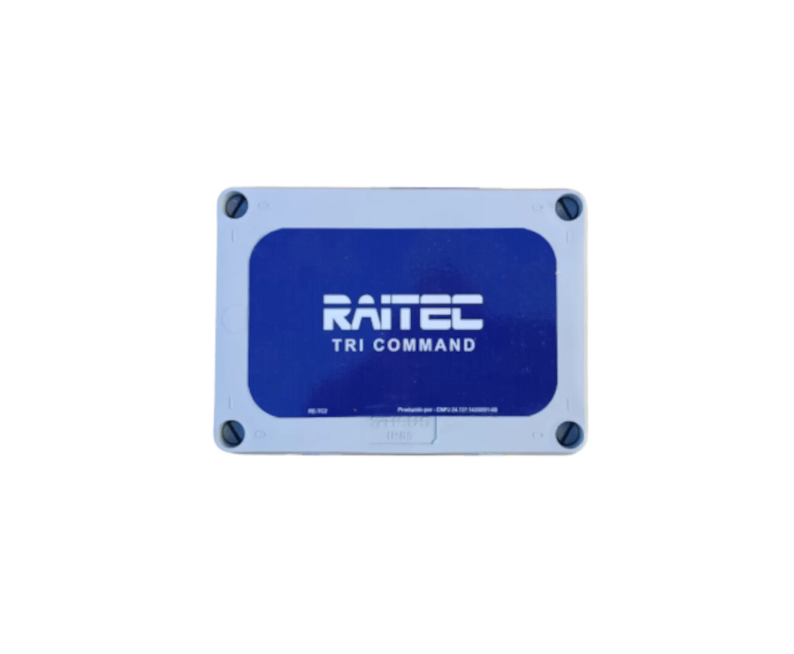
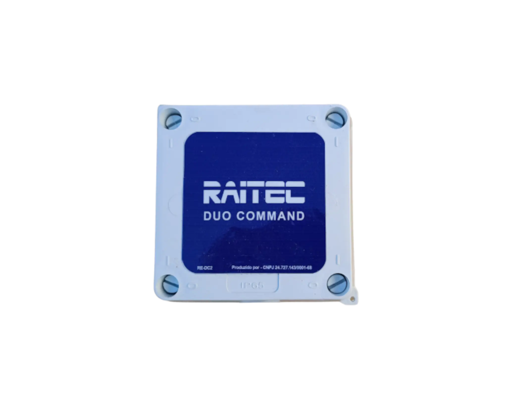

RAITEC ELETRÔNICA
Painéis de comando para piscinas
Uma linha completa de soluções para diferentes configurações de equipamentos e necessidades de automação.
DISTRIBUIDOR EXCLUSIVO
RAITEC ELETRÔNICA
Conheça os principais modelos da linha e solicite a configuração adequada ao seu projeto.

LINHA ULTRA
RAITEC ULTRA
Configurações para controle de múltiplos equipamentos.



| RAITEC ULTRA 04 | RAITEC ULTRA 3 | RAITEC ULTRA 2 |
|---|---|---|
| Programação por timer analógico ou digital (conforme modelo) | ||
| Disjuntores individuais para cada motor e para comando/tomada | ||
| Proteção para motores com relê térmico (opcional) | ||
| Controlador de LED RGB embutido com controle remoto | ||
| Controle remoto para saídas de hidro e cascata | ||
| Tomada auxiliar para acessórios (10A) | ||
| Controladores SMART WIFI para iluminação e motores (opcional) | ||
| Tensão de alimentação 110v e 220v (conforme o modelo) | ||
| Para redes monofásicas, bifásicas e trifásicas (conforme o modelo) | ||
| Controle para 4 motores | Controle para 3 motores | Controle para 2 motores |
LINHA PRO
RAITEC PRO
Programação digital e diferentes níveis de comando.



| RAITEC PRO 3 | RAITEC PRO 2 | RAITEC PRO 1 |
|---|---|---|
| Programação por timer digital (programação diária ou semanal) | ||
| Disjuntores individuais para cada motor e para comando/tomada | ||
| Controlador de LED RGB embutido com controle remoto (opcional) | ||
| Controle remoto para saídas de filtro, hidro e cascata | ||
| Tomada auxiliar para acessórios (10A) (opcional) | ||
| Controladores SMART WIFI para iluminação e motores (opcional) | ||
| Tensão de alimentação 110v e 220v (conforme o modelo) | ||
| Para redes trifásicas, bifásicas e monofásicas (conforme o modelo) | ||
| Controle para 3 motores | Controle para 2 motores | Controle para 1 motor |
LINHA STANDARD
RAITEC STANDARD
Comando essencial para diferentes configurações de motores.

| RAITEC STANDARD 3 | RAITEC STANDARD 2 | RAITEC STANDARD 1 |
|---|---|---|
| Programação por timer digital (programação diária ou semanal) | ||
| Disjuntor de proteção contra curto-circuito e sobrecarga na rede | ||
| Controlador de LED RGB embutido com controle remoto (opcional) | ||
| Controle remoto para saídas de filtro, hidro e cascata (opcional) | ||
| Tomada auxiliar para acessórios (10A) (opcional) | ||
| Tensão de alimentação 110v e 220v (conforme o modelo) | ||
| Para redes trifásicas, bifásicas e monofásicas (conforme o modelo) | ||
| Controle para 3 motores | Controle para 2 motores | Controle para 1 motor |
COMANDOS INDEPENDENTES
TRI COMMAND + DUO COMMAND


| RAITEC TRI COMMAND | RAITEC DUO COMMAND |
|---|---|
| Interface para comandar um motor por 3 comandos independentes — exemplo: timer de filtragem, aquecimento elétrico e gerador de cloro | Interface para comandar um motor por 2 comandos independentes — exemplo: timer de filtragem e aquecimento elétrico |
| Aciona o motor independente da fonte do comando | |
| Sem risco de curto-circuito ou choque elétrico | |
| Tensão de alimentação 110v e 220v (conforme o modelo) | |
| Para motores trifásicos, bifásicos e monofásicos (conforme o modelo) | |

PROJETO PERSONALIZADO
Painéis RAITEC sob encomenda
A empresa RAITEC ELETRÔNICA desenvolve painéis de comando para piscinas conforme a necessidade do projeto.
Desenvolvemos painéis com:
| PAINÉIS DE COMANDO RAITEC SOB ENCOMENDA |
|---|
| Controlador SMART WIFI (motores e LEDS) |
| Proteção de motores com disjuntor motor ou relê térmico |
| Controle de motor com inversor de frequência |
| Controlador digital de temperatura (solar ou elétrico) |
| Painéis para uma ou mais bombas de acordo com o projeto |
| Acionamento de um motor por comando múltiplo |
| Painéis de comando em ABS/PP ou aço com pintura epóxi |
| Tensão de alimentação 110v ou 220v (conforme o projeto) |
| Alimentação para motores trifásicos, bifásicos e monofásicos |
Precisa de outra configuração?
Fale com a RR Elétrica para avaliar o modelo e a configuração adequada ao seu sistema.